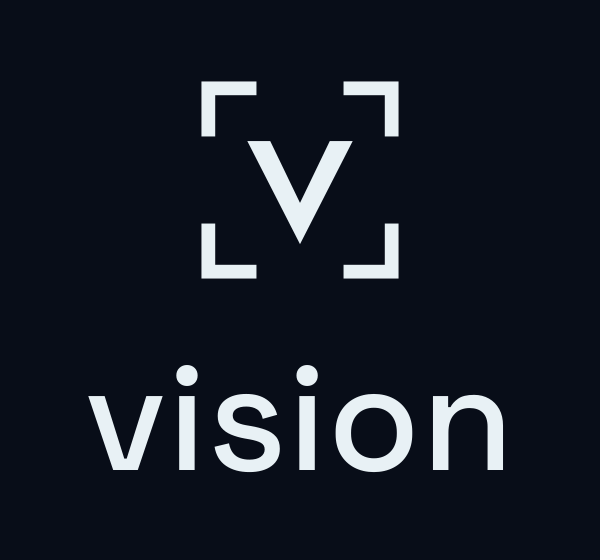
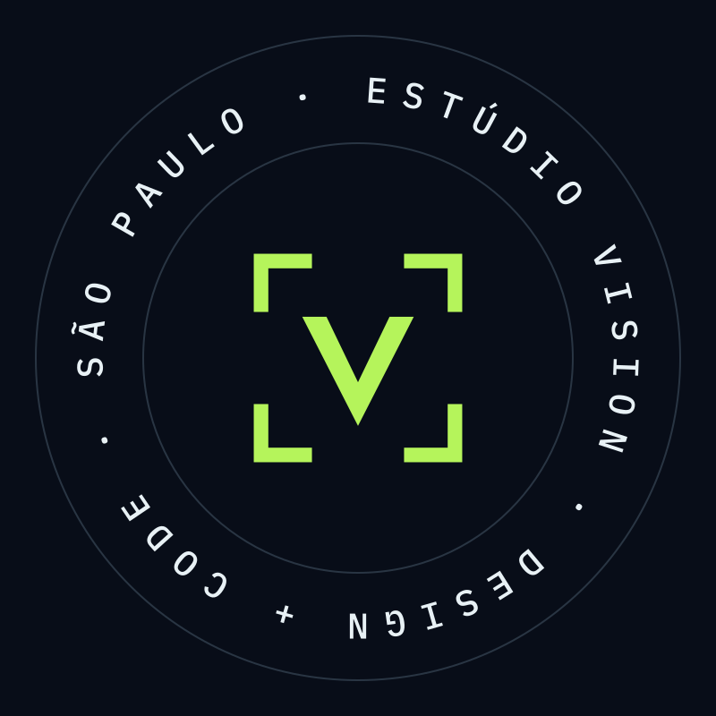
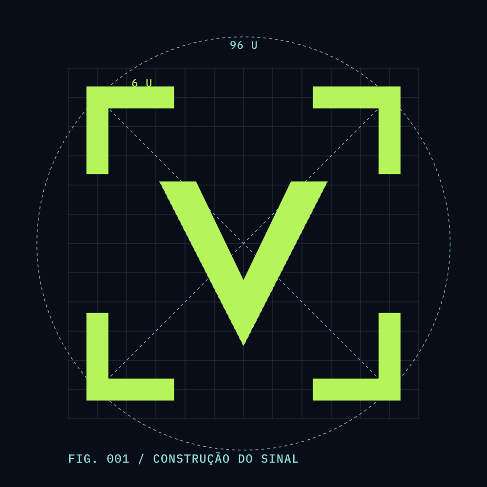
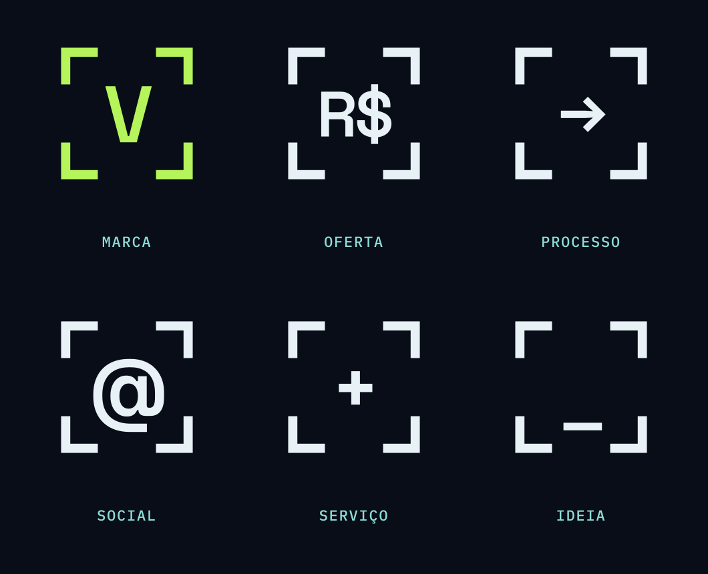
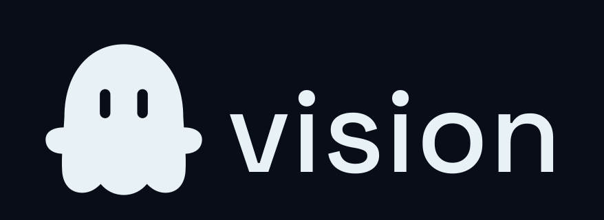
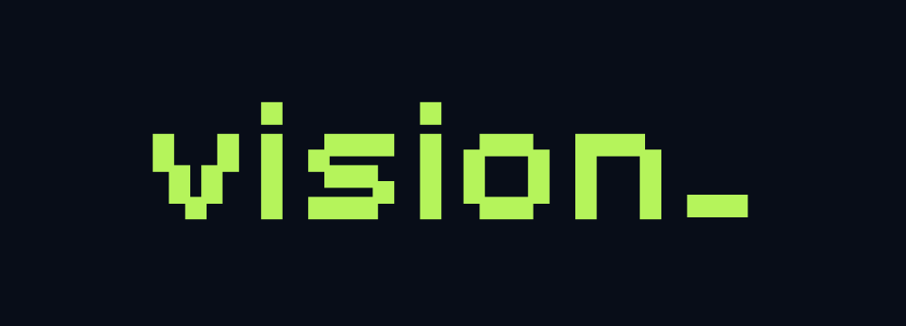
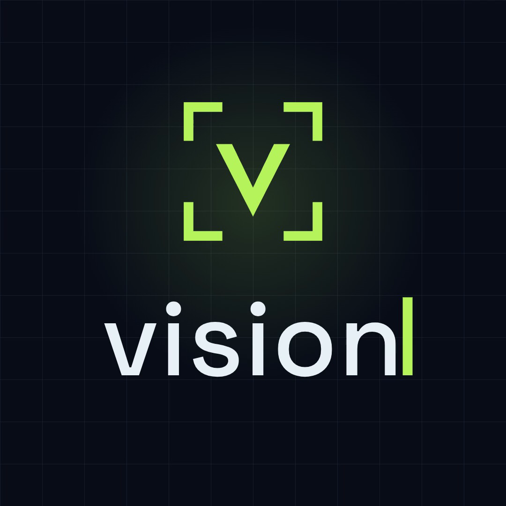

Um sinal.
Muitos usos.
A assinatura principal continua a mesma. O sistema ganha versões para cada lugar onde a Vision aparece: perfil, selo, conteúdo, apresentação e movimento. Os quatro cantos viram uma moldura que enquadra qualquer sinal.

01 / EMPILHADACAPAS, POSTS QUADRADOS
02 / ÍCONEPERFIL, FAVICON

03 / SELOADESIVO, ENTREGA

04 / BLUEPRINTAPRESENTAÇÃO, PROCESSO

05 / MOLDURA DINÂMICAÍCONES DE SEÇÃO, DESTAQUES, STORIES

06 / COM O FANTASMINHACONTEÚDO, BASTIDORES, TEMPORADA

07 / PIXELTÍTULOS DA TEMPORADA, VÍDEOS

08 / ANIMADO · 4 SABERTURA E FECHAMENTO DE REELS · MP4 E GIF